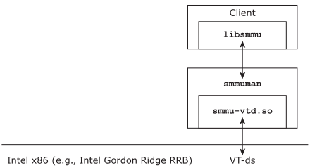

The SMMUMAN comprises a service, an API library, and support libraries
(or drivers).
- smmuman
- The architecture-agnostic SMMUMAN service itself; it is a resource manager
that provides services to SMMUMAN clients through the API library,
libsmmu.a.
- smmu-*.so
- Architecture-specific and board-specific libraries; these provide the
interface between the smmuman service’s
architecture-agnostic code and the hardware IOMMU/SMMUs.
- libsmmu.a
- The API that SMMUMAN clients use to access the SMMUMAN services (see
The libsmmu.a client-side API
).
Warning:
Only SMMUMAN safety components may be used in systems that require safety
certification.
There is only one variant of the libsmmu.a library. This
variant is the safety variant, and may be used in systems that require safety
certification. All other SMMUMAN components have two variants: standard and
safety. The safety components have the suffix -safety
(e.g.,
smmuman-safety).
Preferentially, the SMMUMAN safety variant (smmuman-safety)
loads the safety variants of support files. For example, for NXP i.MX8
platforms, it loads smmu-armsmmu-safety.so and
smmu-cfg-imx8-safety.so (see Configuration at startup
in the Configuring
smmuman
chapter).
The figure below presents a high-level view of the SMMUMAN components. For the
purposes of this illustration, we have used the components for the x86 boards, whose
SMMUs are called VT-ds. The architecture-specific SMMUMAN support library is
smmu-vtd.so.
Figure 1. A high-level overview of the SMMUMAN.

The smmuman or smmuman-safety service
The
smmuman service is architecture-agnostic. It requires
architecture-specific or board-specific libraries to interface with board
IOMMU/SMMU units. The
smmuman service looks after the following:
- Loading and parsing the user-input configuration information at startup.
- Replacing the board configuration information with user-input configuration
information, where relevant.
- Optionally, using this information to inform the board IOMMU/SMMU units of the
DMA devices on the system, and of the permitted memory ranges for each device,
as well as the activity permitted for each of these memory ranges and DMA
devices (read-only, read-write).
- In response to client requests, programming the IOMMU/SMMUs on the board (see
Mapping DMA devices and memory regions through the API
).
- Monitoring the IOMMU/SMMUs on the board and recording illegal DMA devices
attempts to access memory that have been communicated by the IOMMU/SMMU unit in
conjunction with the support code (see the next section).
The smmu-*.so libraries
The smmu-*.so libraries are architecture-specific and
board-specific libraries used by the smmuman service to interface
with board IOMMU/SMMU units. These libraries implement the architecture-specific and
board-specific functions the smmuman service needs to communicate
with the IOMMU/SMMU units, including the retrieval of information about the presence and
locations of DMA devices from the board firmware configuration.
The SMMUMAN includes the following architecture-specific and board-specific support
libraries:
- smmu-armsmmu.so,
smmu-armsmmu-safety.so
- Implement the code to communicate with ARM SMMUs as specified in ARM
System Memory Management Unit Architecture Specification: SMMU
architecture version 2.0 (2016) ARM IHI 0062D.c (ID070116). The
SMMUMAN uses this library on boards like the NXP i.MX8.
- To support configurable StreamIDs on NXP i.MX8 platforms, the SMMUMAN also
provides the smmu-cfg-imx8.so and
smmu-cfg-imx8-safety.so libraries; these libraries
set the StreamIDs according to the configuration specified in the
smmuman service configuration (see
Board-specific configuration libraries
).
- smmu-armsmmuv3.so,
smmu-armsmmuv3-safety.so
- Implement the code to communicate with ARM SMMUs as specified in
System Memory Management Unit Architecture Specification:
SMMU architecture version 3 (2016-2020) ARM IHI 0070.
- smmu-rcar3.so,
smmu-rcar3-safety.so
- Implement the code to communicate with Renesas R-Car H3 IPMMUs, as specified
in Chapter 16 of Renesas R-Car Series, 3rd Generation User’s Manual:
Hardware, Nov. 2018 (Rev. 1.50).
- smmu-vtd.so, smmu-vtd-safety.so
- Implement the code to communicate with Intel x86 VT-ds, as specified in
Intel Virtualization Technology for Directed I/O Architecture
Specification, Nov. 2017 (D51397-009, Rev. 2.5).
- If you are using the safety variant of this support library
(smmu-vtd-safety.so) in a
QNX Hypervisor for Safety system, in which the
QNX OS for Safety runs on the host, you must include the
pci_server-qvm_support.so library in your system (see
Safety variant support for PCI (x86)
in the
smmuman
chapter).
Including the PCI server support file is not necessary for non-hypervisor
systems that run QNX OS for Safety and use the safety
variant of the VTD library.
SMMUMAN in a guest OS running in a hypervisor VM uses the vdev-smmu
virtual device, and doesn't require a smmu-*.so library
(see SMMUMAN in a QNX hypervisor guest
).
Note: If you need to use the SMMUMAN on another board, you will need an appropriate
support library. For more information, contact your
QNX
representative.